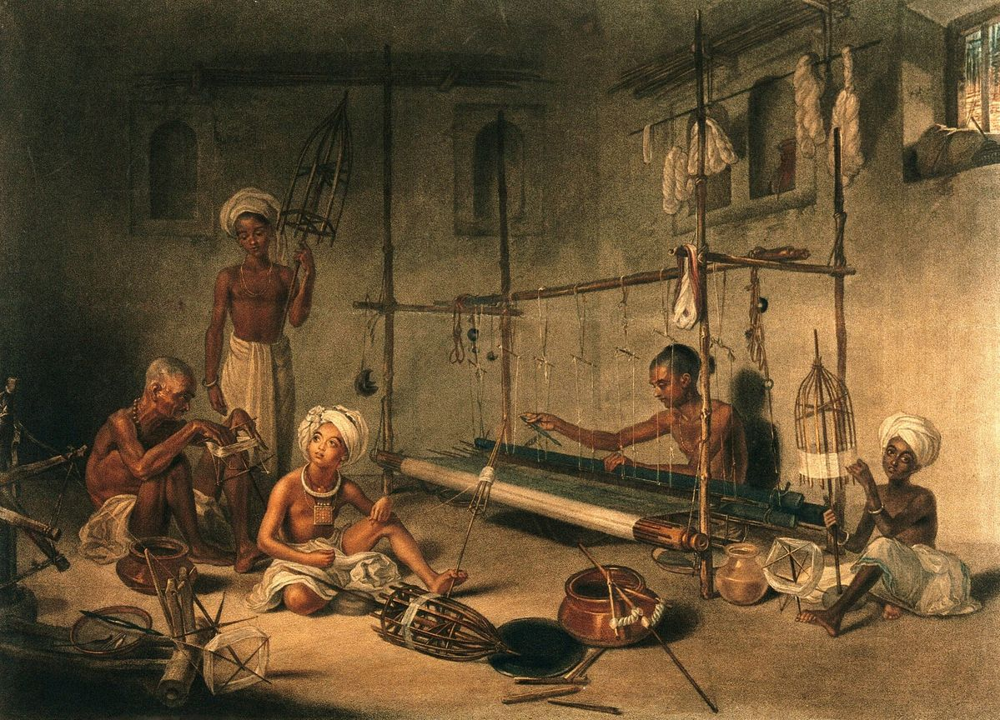

i.Historical research
Exploring historical periods, societies and civilizations through primary sources, historical interpretation and critical analysis.
- historical sources
- world history
- historical interpretation
Department of History, & Faculty of Arts, Benha University
I am a History graduate with an academic background in Ancient Egyptian History, World History and the study of past civilizations. My interests include archaeology, Egyptology, cultural heritage and the ways historical knowledge helps us understand societies and their development.
My academic interests focus on the study of history, historical research and source analysis, with particular attention to Ancient Egypt, world history and past civilizations. I am also interested in making History and Social Studies more engaging through inquiry-based learning, critical thinking and educational technology. My broader interests include archaeology, Egyptology, cultural heritage, digital humanities and Geographic Information Systems (GIS), especially their potential applications in historical research and history education and public understanding.
After completing my Bachelor’s degree in History at Benha University, I pursued a Postgraduate Diploma in Education at Menoufia University. My teaching practicum included classroom experience at middle and high school levels, where I planned lessons, prepared learning activities and developed approaches to student engagement, classroom management and formative assessment during my teacher training.
Replace this monogram with your portrait in index.html.
Exploring opportunities in History education, Archaeology, Digital Humanities and historical research.
Get in touchExploring historical periods, societies and civilizations through primary sources, historical interpretation and critical analysis.
Studying ancient civilizations, material culture and the historical heritage of Egypt and the wider world.
Exploring how digital tools and Geographic Information Systems can support historical research, spatial analysis and heritage documentation.
Developing engaging approaches to teaching History and Social Studies through inquiry-based learning, critical thinking and educational technology.

“Political Legitimacy and Royal Authority in Ancient Egypt: Kingship, Religion and State Power ” Read the paper.
Samira Iqbal’s paper on volunteer monitoring won the best paper award at the Northern Freshwater Symposium. Congratulations, Samira.
Welcome to Priya Raman, who joins the group as a PhD student working on thermal refuges behind beaver dams.
An archaeological research project exploring ancient Egyptian remains through field excavation, material culture analysis and the documentation of archaeological discoveries in Luxor, Egypt.
The Modern World: Conflict and Transformation HIS 331.
Maren Achterberg’s protocol for low-cost turbidity sensing is now a preprint, with full build instructions.
Kwame Osei is now a lecturer at Westford Polytechnic. His thesis on riparian shading is available from the university repository.
Guest lecture at a local educational institution: ““Understanding Ancient Egyptian Civilization Through Historical Sources.” ” Presentation slides are available on the teaching page.
Journal of Ancient Egyptian History, 41(2), 115–134, 2026.
In International Journal of Social Studies Education (NFS 2026), pp. 211–220, 2026.
Journal of Medieval History and Archaeology, 18, e2291, 2025.
In International Journal of Archaeological Research, pp. 77–98, 2025.
‡ Student or trainee I supervised at the time of the work.
| Tuesday | 14:00–16:00Drop in, Room 3.14 |
|---|---|
| Thursday | 10:00–11:00Online, by booking |
Outside teaching weeks, email to arrange a time. Book a slot.